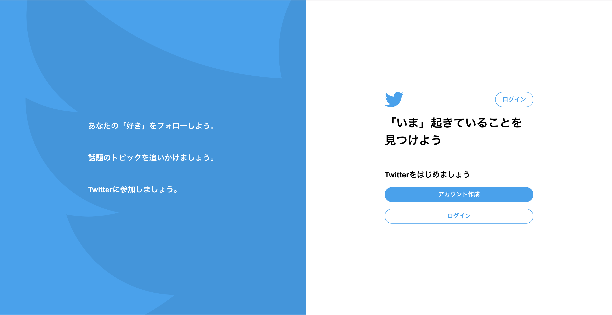
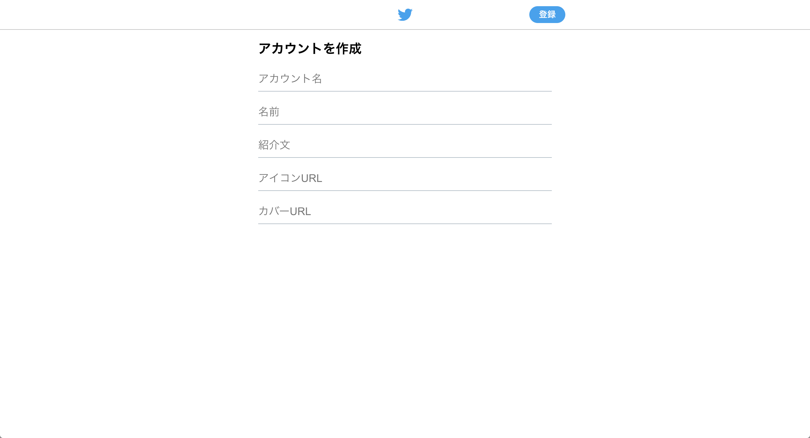

バックエンドエンジニア入門コース Vol.2
https://bit.ly/2Oegin3
Twitterクローンを作成しよう
Day1
Rails環境の立ち上げから簡単なHTML編集まで行います。
- Web概論
- Ruby/Rails概論
- Git基礎
- HTML基礎

Day2
Userの登録機能を作成します
- データベース基礎
- MVCフレームワーク / ORマッパー解説
- 組み込み

Day3
Tweet機能をデータベース設計からModel View Controllerなどを一通り作成します
- データーベース設計
- Rails概論
前回やったこと
- Web概論
- Ruby概論
- Rails概論
- ハンズオンズ (HTML編集)
Rubyの基本構文
データストアとは
物理的なデータの保存先としてはコンピュータのメモリ上、ディスク上、ネットワークをまたいだ先のNASなどがあります。
(コンピューターにおけるHDDやSSDなど)
種別書き込み速度
| 種類 |
帯域 |
| メモリ |
10GB/sec 〜 35GB/sec |
| SSD |
400MB/sec 〜 3GB/sec |
| HDD |
10MB/sec 〜 150MB/sec |
| ネットワーク |
12.5MB/sec 〜 125MB/sec |